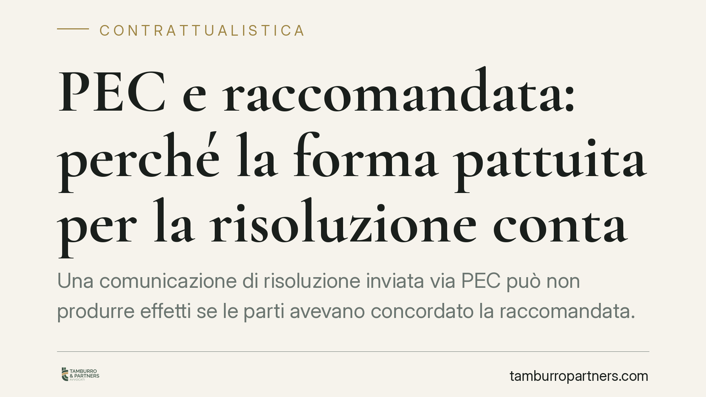

PEC e raccomandata: perché la forma pattuita per la risoluzione conta
Una comunicazione di risoluzione inviata via PEC può non produrre effetti se le parti avevano concordato la raccomandata. Un recente orientamento della Cassazione lo conferma: quando la forma è scelta pattiziamente, il canale concordato va rispettato. Un dettaglio apparentemente formale che può far saltare lo scioglimento di un contratto e generare contenzioso.

Il caso
Una parte intende sciogliere un rapporto contrattuale e invia la dichiarazione di risoluzione tramite posta elettronica certificata (PEC). Il contratto, però, prevedeva espressamente che le comunicazioni rilevanti avvenissero con lettera raccomandata. La controparte eccepisce che la dichiarazione non è stata resa nella forma pattuita.
Secondo un recente orientamento della Corte di Cassazione, l'eccezione è fondata: la difformità rispetto alle modalità concordate incide sull'efficacia della dichiarazione. La PEC, pur dotata di valore probatorio e di data certa, non è automaticamente intercambiabile con la raccomandata quando le parti hanno scelto quest'ultima.
Inquadramento normativo
Il ragionamento si muove su tre coordinate del Codice civile.
L'autonomia contrattuale (art. 1322 c.c.) consente alle parti di regolare i propri rapporti, comprese le modalità con cui comunicarsi atti rilevanti. Se scelgono la raccomandata per la risoluzione, quella scelta vincola entrambe.
La clausola risolutiva espressa (art. 1456 c.c.) produce effetti quando la parte interessata dichiara di volersene avvalere. È la dichiarazione a innescare lo scioglimento: se essa non rispetta la forma convenuta, l'effetto risolutivo rischia di non prodursi.
La forma convenzionale (art. 1352 c.c.) stabilisce che, quando le parti pattuiscono per iscritto una forma determinata per un futuro atto, si presume che l'abbiano voluta per la validità dell'atto stesso. Qui occorre una precisazione: a seconda di come la clausola è formulata, la forma pattuita può riguardare la validità della dichiarazione oppure la sua mera efficacia. Nel primo caso la dichiarazione difforme è nulla; nel secondo non produce gli effetti voluti pur non essendo radicalmente invalida. La portata concreta dipende dal tenore della singola clausola e dall'interpretazione del contratto.
Implicazioni pratiche
Il punto delicato è la distinzione tra due piani che spesso vengono confusi.
Sul piano probatorio, la PEC è pacificamente equiparata alla raccomandata: offre prova dell'invio, della ricezione e della data. In molti contesti è uno strumento più solido.
Sul piano del rispetto della clausola, invece, l'equivalenza non è scontata. Se il contratto nomina espressamente la raccomandata, il problema non è se la PEC sia affidabile, ma se sia il canale che le parti avevano concordato. La risposta, in questa lettura, è negativa.
Le conseguenze per chi opera in ambito B2B sono concrete:
- Rischio sostanziale: la risoluzione può risultare inefficace, lasciando il contratto in vita e la controparte libera di pretendere l'adempimento.
- Rischio temporale: una dichiarazione difforme non interrompe termini né consolida posizioni; una nuova comunicazione, questa volta nella forma corretta, parte da zero, con possibili decadenze o mutamenti di scenario nel frattempo.
- Rischio di contenzioso: la difformità formale diventa un'eccezione difensiva che la controparte può sollevare, spostando il conflitto su un piano puramente formale.
Cosa fare in concreto
- Verificare, prima di ogni comunicazione rilevante, quale forma il contratto imponga per disdette, diffide e dichiarazioni di risoluzione.
- Utilizzare esattamente il canale pattuito: se è prevista la raccomandata, inviare la raccomandata, anche in presenza di alternative apparentemente più comode.
- Aggiornare i modelli contrattuali inserendo clausole di comunicazione flessibili, che ammettano in via alternativa la raccomandata A/R oppure la PEC, così da ridurre il rischio di difformità.
- Documentare e conservare la prova dell'invio e della ricezione, a prescindere dal canale scelto.
- Quando una comunicazione è già stata inviata nella forma errata, la tempestività di una verifica è decisiva: in alcuni casi è ancora possibile rimediare con una nuova dichiarazione conforme.
Un principio che va oltre la risoluzione
La vicenda non riguarda solo la risoluzione. Vale per ogni dichiarazione per la quale il contratto preveda una forma determinata: recessi, diffide ad adempiere, esercizio di opzioni, contestazioni soggette a termini.
Il messaggio è sobrio ma netto: la forma pattuita non è un orpello. Quando le parti la scelgono, diventa condizione dell'atto. Affidarsi allo strumento più evoluto sul piano tecnologico non mette al riparo da un vizio che si colloca su un piano diverso, quello del rispetto dell'accordo.
In fase di redazione conviene quindi ragionare a monte sulle clausole di comunicazione, evitando formule rigide che, nel momento del conflitto, possono ritorcersi contro chi ha ragione nel merito.
---
*Contributo informativo a cura di Tamburro & Partners Avvocati. Non costituisce parere legale.*
Ogni contratto ha il suo equilibrio.
Se vuoi una revisione delle clausole o una redazione su misura, scrivi allo studio. Ti rispondiamo entro un giorno lavorativo.